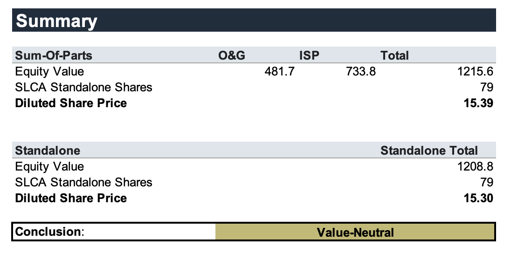
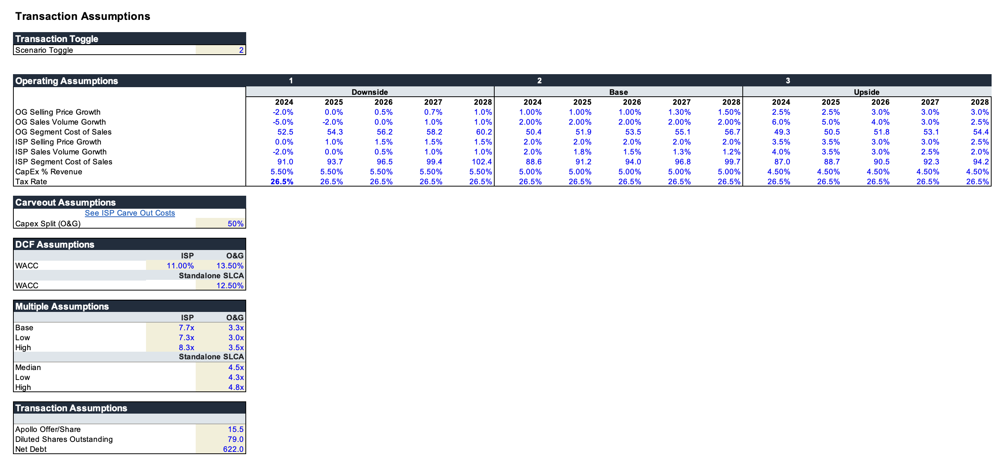
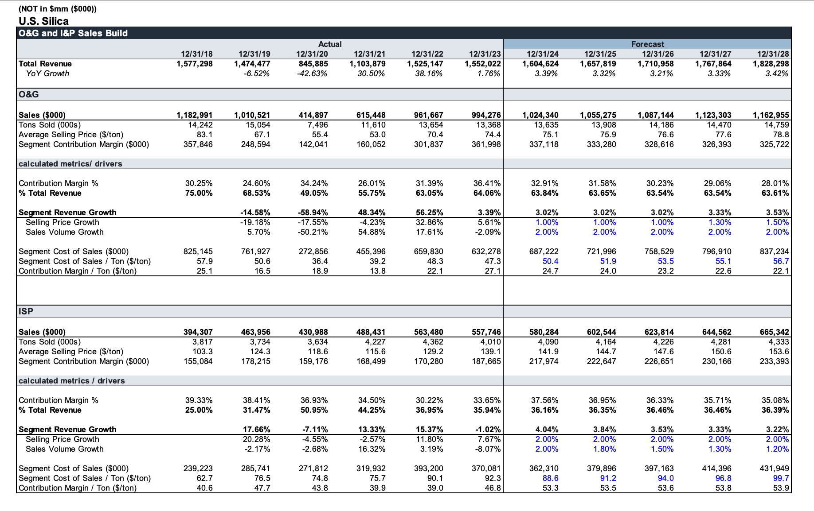
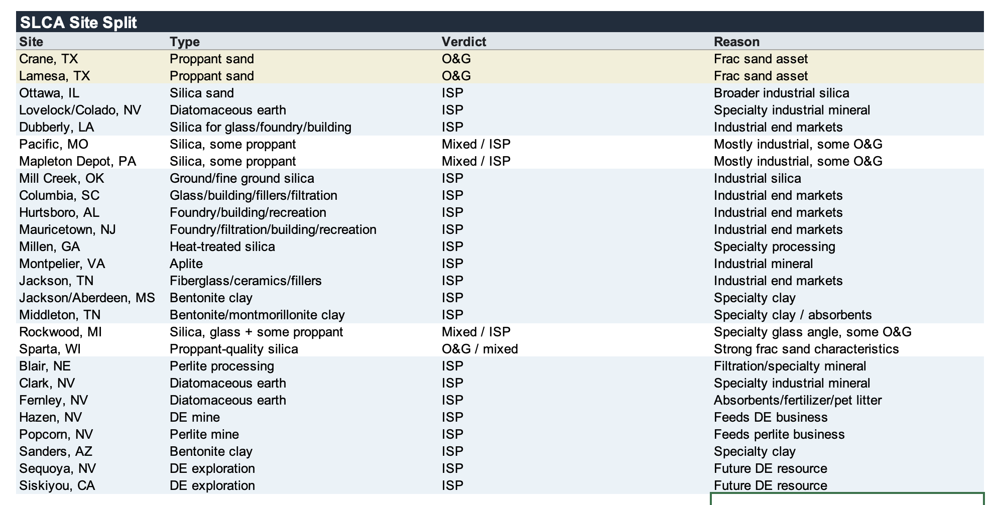
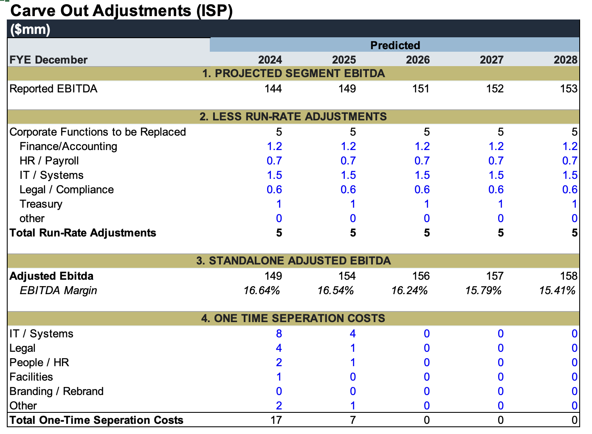
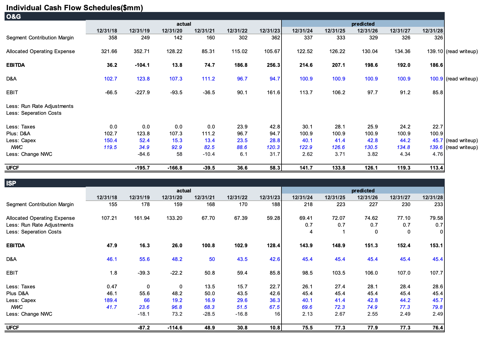
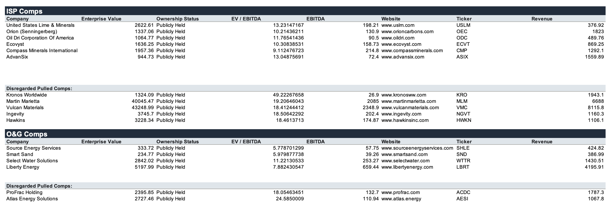
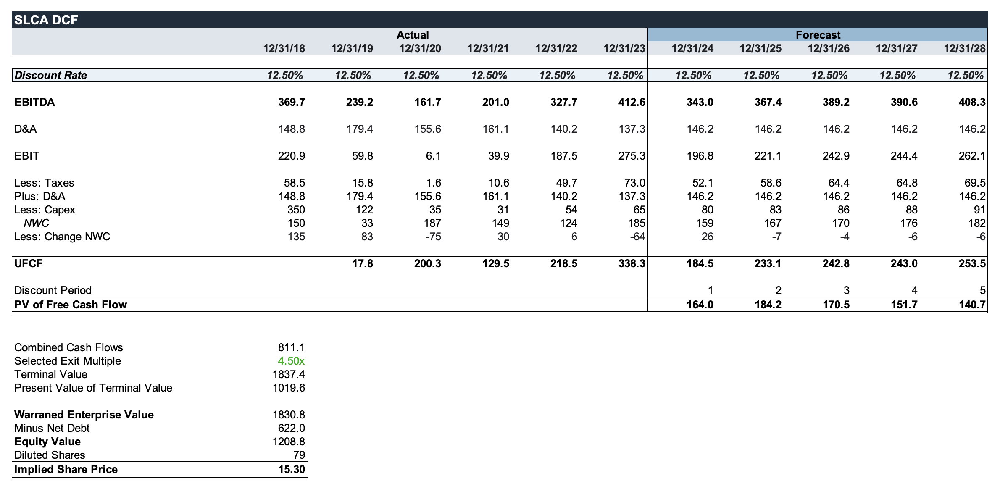
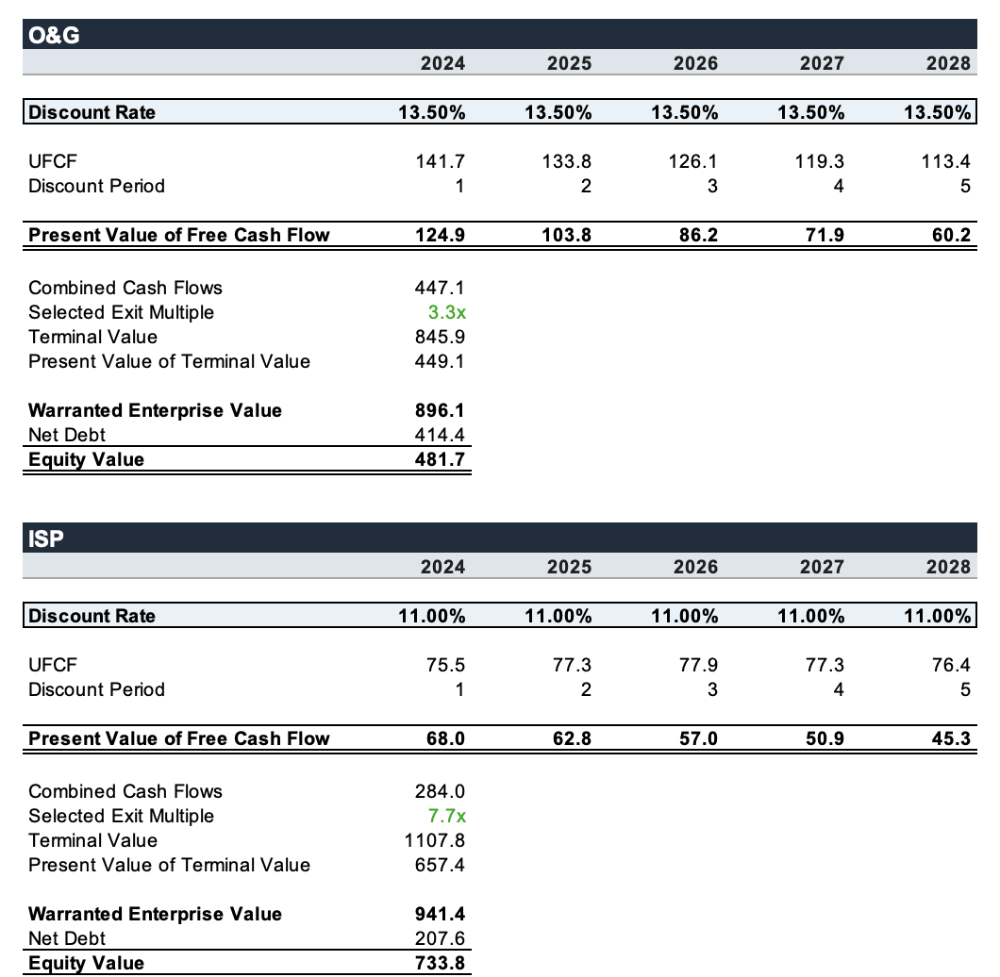

Should U.S. Silica Have Separated ISP and O&G?
In April of 2024, Apollo agreed to acquire U.S. Silica for $15.50 per share in an all-cash transaction valuing the company at approximately $1.85 billion. U.S. Silica has two distinct businesses. Oil & Gas Proppants, or O&G, sells frac sand into the energy market, while Industrial & Specialty Products, or ISP, sells other industrial minerals and Silica. O&G is larger and more cyclical while ISP has steadier margins and more diversified end markets. U.S. Silica had looked at separating the businesses before, and Piper Sandler also valued the two segments separately during a review.
This transaction interested me because the breakup logic seemed pretty obvious at first; ISP is the better business and deserves a higher multiple compared to I&G. So why wouldn’t you separate the two? I wanted to see if that would actually create value, and so I built operating forecasts for ISP and O&G, allocated cash flow between businesses, split their facilities, modeled carveout costs, and valued the businesses independently.
Executive Summary
Splitting U.S. Silica was value neutral in my model: the breakup case produced $15.39 per share versus $15.30 as a standalone company, while Apollo’s $15.50 cash offer let shareholders receive the value without taking separation risk.
It is highly recommended that you download this spreadsheet.
Executive Summary
The kicker of this model is that the divestiture of U.S. Silica was value neutral. My Sum of Parts valuation yields about $1.216bn of equity value, or $15.39/share vs. my standalone U.S. Silica DCF of about $1.209bn, or $15.30/share. So after the entire company was split off and ISP was given a 7.7x exit multiple relative to 3.3x for O&G, that ultimately leaves you with a difference of a whopping nine cents per share, or something close to 0.6%.

This was pretty surprising to me. My original thinking was that ISP was basically trapped inside a frac sand company and the market wasn't giving it the valuation it deserved. I still think that part is true, but what I was wrong about was assuming that unlocking a higher multiple automatically creates shareholder value. ISP would need its own corporate functions, separation expenses have to be paid, assets have to actually be divided, and O&G still exists after the transaction at a much lower valuation. Once all of this is included, almost all of the theoretical SOTP upside disappears.
The same is true for Apollo's $15.50 offer - it's a shade ahead of my stand-alone valuation of $15.30 and SOTP valuation of $15.39. That's exactly how I see the sale. Shareholders have pretty much already received the company's breakup value and they didn't even have to manage the breakup to get it. I didn't build an Apollo LBO in this model because honestly that wasn't the question I wanted answered.
Assumptions
The model has three toggleable operating cases depending on selling price growth, volume growth, CapEx and cost per ton. I will use the base case for purposes of this writeup. For O&G I model revenues as tons sold times average selling price. I assume some volume growth with very modest increases in average selling price and meanwhile cost per ton also increases during the forecast period.
ISP is modeled similarly, but the business has a much more stable operating profile. I assume 2% selling price growth and volume growth starting at 2% before tapering slightly. For valuation, I use an 11.0% WACC and 7.7x exit multiple for ISP versus a 13.5% WACC and 3.3x multiple for O&G. Standalone U.S. Silica uses a 12.5% WACC and 4.5x exit multiple. The difference between those ISP and O&G multiples is basically the entire reason this project exists.

Revenue Build
Instead of simply taking out a single assumed consolidated revenue growth rate, I ended up building each segment based on ton sold and average selling price. The company did about $1.55bn of revenue in 2023, which grows to $1.83bn in my base case to 2028. O&G (72% of 2023 revenue) grows from about $994M to about $1.16bn, and ISP (28% of 2023 revenue) is up from about $558M to $665M.

The more interesting difference is underneath revenue. O&G costs increase faster than pricing in my model and contribution margins therefore compress, while ISP stays much more steady. O&G's historical volatility is also pretty insane. Revenue fell from over $1bn in 2019 to approximately $415M in 2020 before recovering to almost $1bn by 2023. ISP obviously moves too, but nowhere close to that much, which is a big reason why valuing these two businesses at the same multiple makes no sense.
Site Split
Another thing I wanted to understand was what physically gets separated. It is easy to call something a "Sum of Parts" in Excel, but in reality these businesses own mines and processing facilities all over the country and those assets actually have to go somewhere. I went facility by facility and assigned U.S. Silica's locations based on their primary products and end markets.

Crane and Lamesa are simpler O&G assets since they produce mostly frac sand. The majority of the silica, diatomaceous earth, perlite, clay and specialty minerals plant sit under ISP. There are some mixed facilities where the answer isn't as clear, no management data on how the locations would be sliced up physically or legally, but this exercise helped put me in the right mindset of physically seeing the separation rather than two spreadsheet companies of ISP and O&G.
ISP Carve Out
This is where the comparison to an ISP starts to seem less compelling. ISP would have had to set up all those functions on its own if it was a stand alone business, and it still would have to replace finance and accounting, human resources and payroll, information technology, legal and compliance, treasury and other functions that are provided by U.S. Silica. I also included one-time separation costs associated with systems, employees, legal, real estate and other carve-out expenses.

I want to be transparent that this is the part of my model most likely to be wrong. I have no visibility on what stranded corporate expenses, TSAs, or true separation costs would be without management access. But assuming that those don't exist is even less probable. That's the very purpose of this schedule - to keep the SOTP from turning into fantasyland where ISP gets a much higher multiple and magically separates from O&G for free.
Individual Cash Flow
U.S. Silica doesn't provide fully separated financials for both ISP and O&G, so I built them out. I begin with contribution margin for each business, apportion operating expenses accordingly, and then add back D&A, taxes, CapEx, working capital, and carve out adjustments to get UFCFs for each. I've been conservative to avoid overselling the two separate entities against the consolidated U.S. Silica, so I've kept the numbers somewhat tethered to the company whenever possible.

O&G makes higher absolute cash flow but it's far more volatile and subject to commodity cycles. ISP makes less absolute cash flow but it is a more stable core business. Also, that's the reason I wouldn't just do an EBITDA SOTP and leave it at that. The actual cash flow behind each segment matters, given the somewhat dissimilar CapEx needs and operating risk profiles of each.
Public Comps
I created individual comp sets for both O&G and ISP I used separate industry-specific sets because the points of comparison are drastically different for each segment and I didn't want to compare O&G to ISPs. Since ISP was the main focus, I decided to focus the O&G comp set on the oil side. For ISP, I created a comp set of industrial minerals and specialty materials companies United States Lime & Minerals, Orion, Oil-Dri, Ecovyst, Compass Minerals and Advan Six.

ISP companies generally trade at substantially higher EBITDA multiples, which isn't surprising given the lower cyclicality and more diversified end markets. However, I still haircut the ISP multiple because a separated ISP would be smaller and carry carveout / execution risk. I therefore use a 7.7x exit multiple for ISP and 3.3x for O&G in the base case. That is a massive spread, which is why I originally expected the breakup valuation to be way higher than the standalone DCF.
Standalone U.S. Silica DCF
Before doing the breakup valuation I needed something to compare it to. Using a 12.5% WACC and 4.5x exit multiple, my standalone U.S. Silica DCF produces approximately $1.209bn of equity value, or $15.30 per diluted share.

Apollo offered $15.50. I thought this result was pretty interesting because my independent operating build lands extremely close to the actual transaction price. Obviously this does not mean $15.30 is objectively the exact value of U.S. Silica, but it does give me some confidence that the deal price was within a reasonable range. More importantly, $15.30 becomes the hurdle rate for the breakup. If separating ISP and O&G does not create meaningfully more value than that, then shareholders are taking a lot of execution risk for basically nothing.
Carve Out DCFs
Finally, I valued ISP and O&G independently. ISP receives an 11.0% WACC and 7.7x exit multiple because of its steadier cash flows and diversified industrial end markets. O&G gets a 13.5% WACC and 3.3x exit multiple because it is far more cyclical and tied to oil activity.

Combined, the two businesses produce approximately $1.216bn of equity value, or $15.39 per share. Standalone U.S. Silica was $15.30 per share. That means this entire separation creates approximately $7M of incremental equity value, or $0.09 per share. Around 0.6%.
This was the biggest takeaway from the project. I started this thinking the SOTP would show U.S. Silica should have split the businesses. ISP clearly deserves a higher valuation than O&G, and that part ended up being true. But the higher ISP multiple gets almost entirely eaten up by separation costs, standalone expenses, and the lower valuation of O&G. The conglomerate discount can be real while still being incredibly difficult to actually monetize.
Apollo offered $15.50 in cash, slightly above both my standalone and breakup valuations, without requiring shareholders to wait around for a complicated separation. For me thats really the larger point of the transaction. U.S. Silica did not necessarily stay together because ISP and O&G were perfect businesses to own together. They stayed together because separating them was basically value neutral.